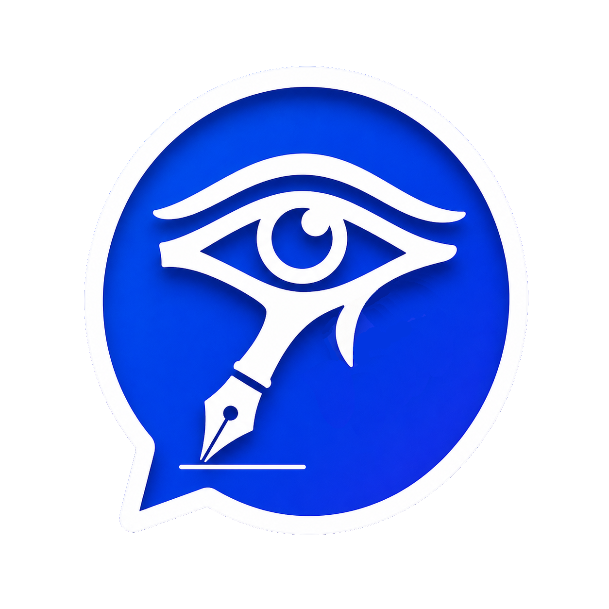

Oii! Você viu a comunidade nova?

VocêDisponível
Você tem 1 convite novo.
Favoritos 2/3
Amigos 3/8
Grupos e comunidades 4
M
Marina Disponível“Ouvindo Sonor enquanto trabalho”
Você iniciou uma conversa com Marina.
Marina está digitando ao vivo...
Tudo o que você digita aparece ao vivo.